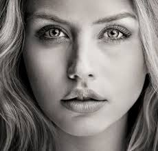

Richard Colson
29/02/2015 15:23
I am just wondering what everyone uses to do portrait shots. I feel the lens I should use doesn't give me the quality of photo I want and doesn't have a small enough F-stop to
get the look I want.
I love my 50mm F/1.8 II from canon but I find I have move very far back to get what I want in my photos.
I am currently looking at 85mm F/1.2 II from canon but I don't know if its what I actually need. I take quite a bit of family photos and infant photos, some maternity shots also.
thanks!

Alice Forston
5 days ago 12:10
Professional portrait photographers tend to favour top-money portrait lenses like the Canon EF 85mm f/1.2 or Nikon 85mm f/1.4G.
But for those of us who don’t want to use this type of lens on a daily, money- earning basis, the respective prices of $2,000/£1,700 and $1,629/£1,200 put them beyond sensible reach.
At the other end of the scale, lenses like the Canon EF 50mm f/1.8 cost a mere $110/£80, but come up short in terms of features, performance and build quality.
Thankfully, there’s plenty of choice to be had in the middle ground, with a range of prime (fixed length) lenses costing between $300/£200 and $500/£400. Let’s see how five of these portrait lenses measure-up.
Vladimir Kelskin
3 days ago 02:30
If you're having to move "very far back" to get all you want in your photos, I would probably not consider this portrait photography much anymore. Even on a crop
body like your Canon 700D, 50mm is fairly wide to my way of thinking unless you're shooting environmental portraits. I do sometimes move to as wide as a 35mm for
group shots, but that's it.
For many reasons novice photographers attempt to get way too much in when framing most anything. When doing portraits, they want to get in the swimming pool, palm trees and other people
to the point where their main subject no longer has top billing. Decide what the subject is and take your pictures of that and that only. That's what people want to see. Sometimes it's ok to get closer than that. It's ok to chop off parts of your main subject and get in there tight.
One suggestion I often make to new photographers is to keep moving in on your subject until you about can't tell what it is, them move a little back until you can, but only that far. This
might be a good starting point. It's not just for portraits and not a carved in granite rule, but just a suggestion for learning.
With a crop camera on a budget, I might be forced to go wide like a 50mm lens you have. I'd prefer an 85mm though. On a full frame camera inside or in the studio I start at around 85mm
for half body or head and shoulders. I move up to a 105 f/2.5 for head and shoulders from there and outside move to 150 f/2.8 or 200 f/2.8. I sometimes move on up to a 300 f/2.8 or even a 500 f/4, but that might be a bit overkill for most. I like the flattering perspective a telephoto lens provides.
If I had to choose one full time portrait lens, I would probably be an 85 f/1.4 on Nikon or on Canon. I'd either get the Nikon model I have or the Sigma 85 f/1.4 for Canon. I think Canon's
85 f/1.2 is a tad slow and heavy for the money, but many of my friends swear by it. I'd keep a 35 f/1.8 or 28 f/1.8 around for groups.
For you and right now, I'd keep that 50 f/1.8 and learn how to get in tight with it. Forget this backing up nonsense. Learn how to use it.
There's no such thing as a best lens for portraits, it depends on what kind of portrait you are taking. Is it an environmental portrait, head shot, 3/4 length, full length. Do you want to focus on angles, or have a flat shot with lots of background compression.
Do you want a soft shot with shallow DOF or do you lots of tiny detail. You can use everything from an 8mm lens to a 600mm lens to create stunning portraits.